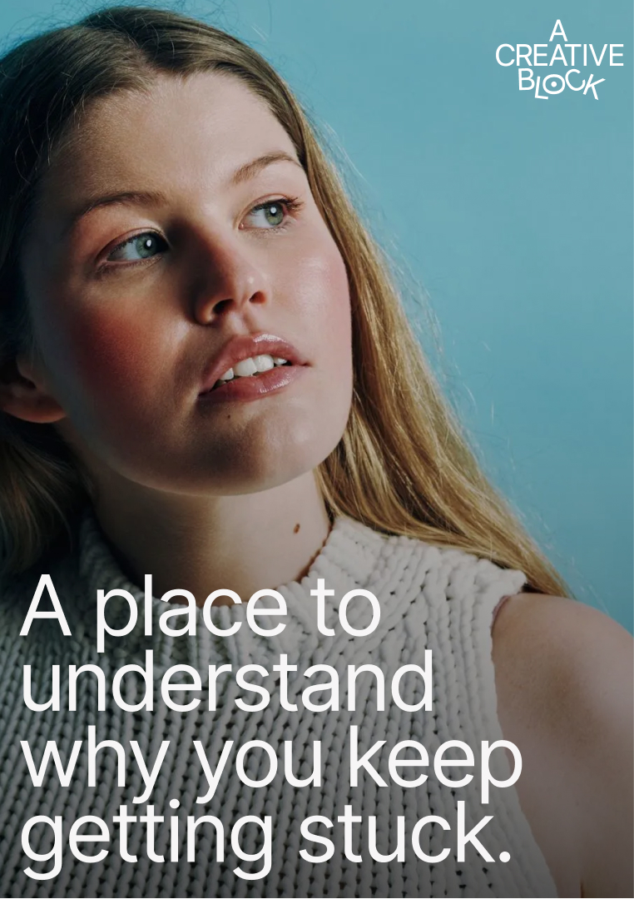

Focused
Project Session
€150
One 90-minute session to clarify the obstruction, work directly on the project and define the next move.
EnquireYou keep preparing instead of starting
There are too many directions
You are stuck near the finish
The project has become chaotic
Feedback knocked your confidence
You lost the point—or the energy
You are waiting to feel ready
Every idea turns into a bigger project
You keep changing the plan halfway through
The first draft feels impossible
You cannot tell what is good anymore
You are polishing the part that already works
The deadline passed and the shame stayed
You need permission no one can give you
The work no longer feels like yours
You have momentum—just in the wrong direction
You know what to do, but cannot make yourself do it
You are afraid finishing will make it real
Some blocks need reflective coaching: fear of exposure, perfectionism, lost confidence, unclear direction or a difficult relationship with the work. Others need creative consulting: restructuring the project, resolving a process problem, reducing scope or redesigning the workflow.
Most real projects need a blend. We agree the mode with you rather than forcing every problem into coaching.

Start with the smallest format that can realistically help. We can extend only if it is useful.
One 90-minute session to clarify the obstruction, work directly on the project and define the next move.
EnquireThree 60-minute sessions: understand the block, test an intervention in real work and adjust from what happens.
EnquireSix sessions combining coaching, project clarification, practical experiments and review.
€600 accessible · €800 standard · €1,200 supporter
EnquireA founder came with many viable ideas and no basis for choosing. The work was not to produce more options; it was to surface what mattered, name the trade-off and form one route that could be tested without pretending it was permanent.
Enquire about individual support